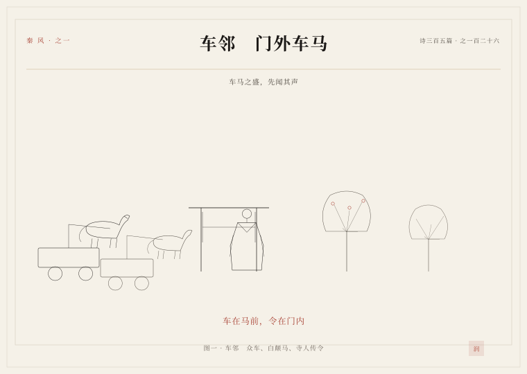
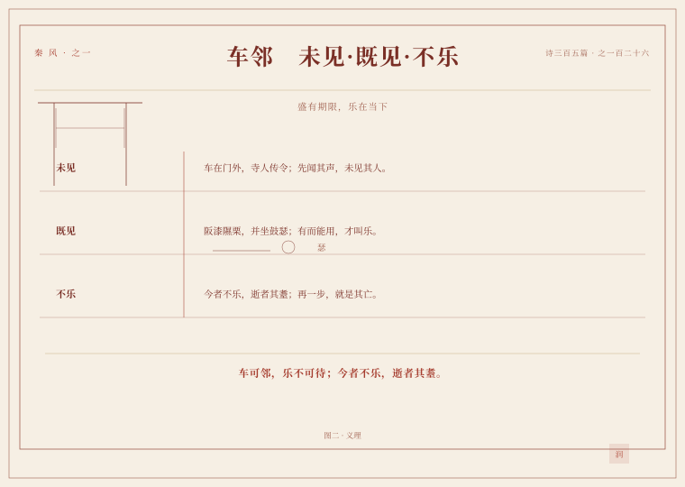

第一百二十六篇 车邻
秦风 · 之一 SJ126
朗读 · 普通话
依经文原文朗读，章次不读出；配古琴底乐，不改速、不加拖腔。全库同一音色（豆包 TTS），非播音员录制。
一 解题
诗三判：
- 谁在说：秦地之人，见秦仲之盛。车马既众，寺人传令；由「未见」到「既见」，由门禁到并坐，末以「今者不乐，逝者其耋」相劝。
- 说什么事：三章只换「漆／栗」「桑／杨」「瑟／簧」「耋／亡」。前一层写车马侍御之盛，后一层写既见之乐，末一句把乐拨到岁晚。
- 为何编在此：秦风之首。秦仲始大，有车马礼乐侍御之好；唐风终于戒，秦风始于乐。一戒一乐，正是两风的分界。
《毛序》：“《车邻》，美秦仲也。秦仲始大，有车马礼乐侍御之好焉。”
朱子《诗集传》：“赋也。邻邻，众车行声。白颠，额有白毛，今谓之的颡。君子，指秦君。寺人，内小臣也。令，使也。是时秦君始有车马及此寺人之官，将见者必先使寺人通之，故国人创见而夸美之也。”
本库的看法：《车邻》是一首把「盛」写成「及时」的诗。
车马、寺人、阪隰之木，都是「有」；并坐鼓瑟鼓簧，是「用」。有而能用，才叫乐；有而不能久，才要及时。
断语：车可邻，乐不可待；今者不乐，逝者其耋。
先辨五事：「邻邻」是众车声，不是邻里；「寺人」是内小臣，不是僧人；「白颠」是马额白毛，不是白马；「耋」是年老，不是八十专称；「逝者」是岁月流逝，不是死者。
二 经文
第一章
有车邻邻，有马白颠。
未见君子，寺人之令。
第二章
阪有漆，隰有栗。
既见君子，并坐鼓瑟。
今者不乐，逝者其耋。
第三章
阪有桑，隰有杨。
既见君子，并坐鼓簧。
今者不乐，逝者其亡。
分章：三章，一章四句，二、三章章六句。
三 韵读
- 一章：邻、颠、令，真部；「令」读平声，与邻、颠相押。
- 二章：栗、瑟、耋，质部；漆、隰句首不韵。
- 三章：杨、簧、亡，阳部；桑、隰句首不韵。
读法：一章未见，韵收真部，候传而未见；二三章既见，韵由质部转阳部，瑟近而簧远，叹老叹死一层重一层。
四 字义与名物
- 邻邻：毛传「众车声也」；朱传「众车行声」，从之。白颠：毛传「的颡也」，朱传「额有白毛，今谓之的颡」；从额白之义。
- 君子：指秦君。寺人：毛传「内小臣也」，郑笺「欲见国君者，必先令寺人使传告之」；从郑笺传告之职，不以后世宦官泛称解。
- 令：毛传「告也」，郑笺、朱传「使也」；从使、传告。
- 阪：山坡。隰：低湿之地。漆、栗、桑、杨：皆木名；毛传以阪隰有木兴人君有礼乐之有。
- 并坐：君臣同席。瑟：拨弦乐器。簧：笙中之簧，鼓簧即吹笙。
- 耋：毛传「老也」；《说文》「年八十曰耋」，一说七十；诗中只取老，不定岁数。
亡：死。
五 今译
有车众声邻邻，有马额上生白。还没见到君子，先由寺人传令。
山坡有漆，低湿有栗。已经见到君子，同坐弹瑟。如今不行乐，岁月一去就到老年。
山坡有桑，低湿有杨。已经见到君子，同坐吹笙。如今不行乐，岁月一去就是死亡。
六 章旨
- 一章：写「未见」。车马已盛，门禁未开；盛在门外，先闻其声。
- 二章：写「既见」。阪漆隰栗，物有其位；并坐鼓瑟，主客同乐。乐在座上，忽念岁晚。
- 三章：写「既见」之再。阪桑隰杨，换木不改地；并坐鼓簧，换乐不改情。末句由耋进亡，一步比一步紧。
- 总收：车马是「有」，并坐是「用」，今者不乐是「时」；三层一齐，盛就有了期限。
七 诗教
- 兴：以车马起，以阪隰承；物有其地，人有其时。
- 观：观秦之始大，不在兵甲，先在车马侍御；礼乐之器，是一国之骨。
- 群：寺人传令于外，主客并坐于内；一层门禁，一层同乐，君臣之亲可见。
- 怨：无怨，有警；警在「逝者其耋」，不在车马不足。
八 分寸与边界
- 不可把「邻邻」读作邻里。它是车声；一作邻里，全篇的车马之盛就散了。
- 不可把「寺人」当僧人。寺人是内小臣；一作僧，秦宫就成寺院。
- 不可把「逝者」当死者。它是岁月流逝；一作死者，及时行乐就成送葬。
- 不可把此诗读作单纯宴乐。末二句是警；一去警，秦风之首就只剩富贵。
- 不可把「并坐」读作并肩。并坐是同席；一作并肩，礼数就没了。
九 存疑
- 诗旨：毛序「美秦仲」，朱子亦以为美之；今人或以为劝秦仲及时，不专美。本库从毛朱，末二句作警。
- 寺人：毛传「内小臣」；朱子同。从内小臣，不取宦官泛称。
- 「耋」：毛传「老也」；《说文》「年八十曰耋」，一说七十。诗中只取老，不定岁数。
- 「逝者」：一说是「往者」，指已去之人；本库从岁月流逝。
- 阪隰之兴：毛传以为兴，朱子以为赋而兴；兴赋之间，旧说不一。
- 作者与系年：是秦人自作还是他国士人入秦所作，诗中无征；毛序系于秦仲，是否已至襄公之世，旧无定说。作者、系年并存疑。
十 跨典
- 《史记·秦本纪》：非子居犬丘，好马畜，孝王封之邑秦；至秦仲，为大夫，诛西戎，秦始大。——毛序「秦仲始大」之史；诗中车马侍御，即附庸渐大之象。
- 《论语·子罕》：“逝者如斯夫，不舍昼夜。”——逝是时光；此诗「逝者其耋」同此一逝。
- 《诗经·唐风·蟋蟀》（SJ114）：“今我不乐，日月其除。”——同是岁晚劝乐；唐风以戒收，秦风以乐起。
- 《礼记·曲礼下》：君臣相接，有侍御传告之节；寺人之令，即门禁与礼数之始。
- 《诗经·秦风·驷驖》（SJ127）：同写车马；车邻写乘车之乐，驷驖写田狩之盛，一内一外。
十一 双卡与图
六对：
| 邻邻（车声） |
邻邻（邻里） |
| 寺人（内小臣） |
寺人（僧人） |
| 白颠（额白） |
白颠（白马） |
| 耋（老） |
耋（八十专称） |
| 逝者（岁月） |
逝者（死者） |
| 并坐（同席） |
并坐（并肩） |

图一 · 车邻 众车、白颠马、寺人传令

图二 · 车邻 未见、既见、今者不乐
读图三处：
- 车马：图一车二乘、马二匹，一马额上留白；寺人立于门侧，只画衣身与手，不作脸；车在门外，令在门内。
- 阪隰：图一左坡有漆，右湿有栗，二木分地；木各归其地，不并成一林。
- 三层：图二「未见／既见／今者不乐」三列，中列并坐鼓瑟，末列朱线收「逝者其亡」；乐一格比一格近，时一格比一格紧。
断语：车可邻，乐不可待；今者不乐，逝者其耋。